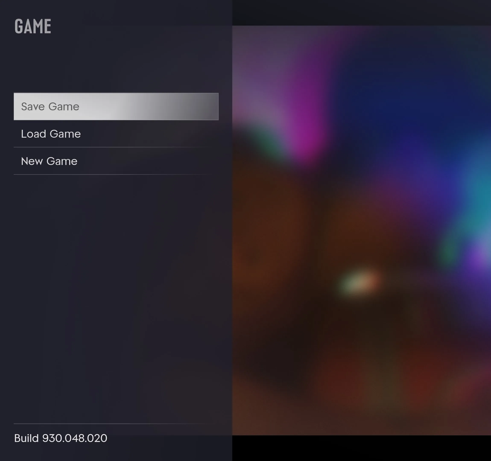

At the lab keypad
- Open the Lab Fees lab entry.
- Check that you are at the lab behind the Moonstone Boutique counter.
- Enter 0420 on the in-game keypad, starting with zero.
Trying a cheat after the story
- Keep a manual save before trying a cheat.
- Open the cheat input guide and follow the buttons for your console.
- Read the D-pad directions from left to right. Check the unlock requirement beside the sequence.
Down, Right, Up, Down, Right, Up, Right
Keeping a mission for later
- Open the manual saves guide before you start the mission.
- In free roam, open the pause menu and choose Game → Save Game.
- Use a separate slot and check the time in the list. Choose Load Game to return to that point later.

